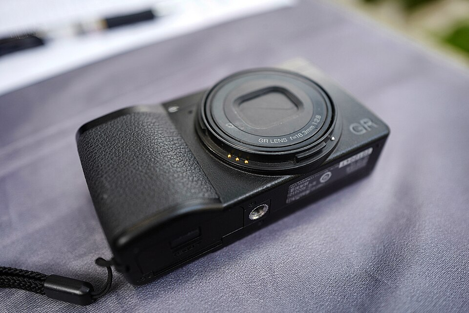

秉承GR系列一贯的设计理念，为了更加强化拍摄画质，对焦速度，便携性等相机本身的价值，更新了镜头，COMS，画像处理引擎等主要的元件，可以说是一款焕然一新的产品。搭载了APS-C画幅的大型CMOS传感器，可拍摄有效像素约2424万的精细图像，与前代机型相比机身更加小巧，约0.8秒的高速开机速度，让您可以轻松的享受拍摄的乐趣。并且搭载了高速混合对焦AF与理光映像独有的机身防抖系统“SR（Shake Reducation）”，触摸屏等新功能的采用让直观的操作成为可能，此款产品无论是操控性还是机体性能都得到了无与伦比的提升。
最适合扫街的小机器。
最小的APS画幅相机，不引人注目，28镜头适合极近距离抓拍，像质上佳。SNAP模式很实用。
耗电很快。关屏用取景器加SNAP模式会好些。贵。